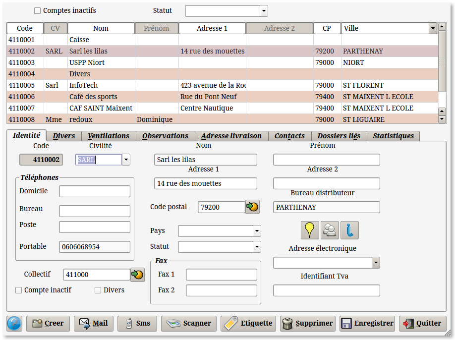
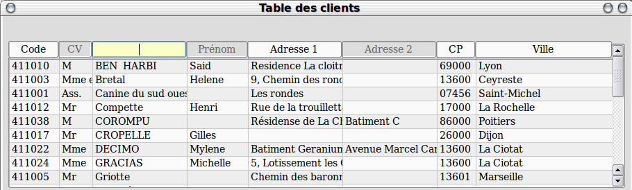
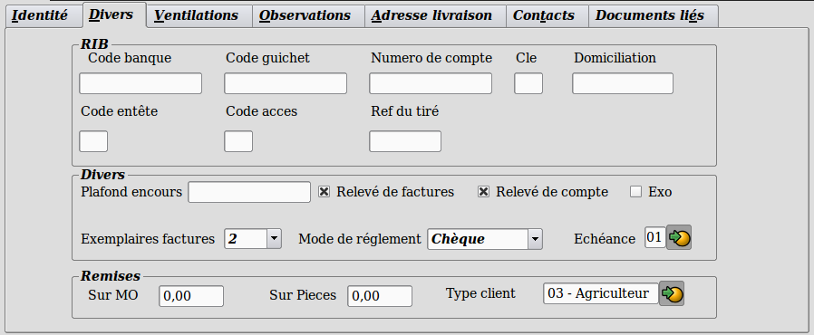
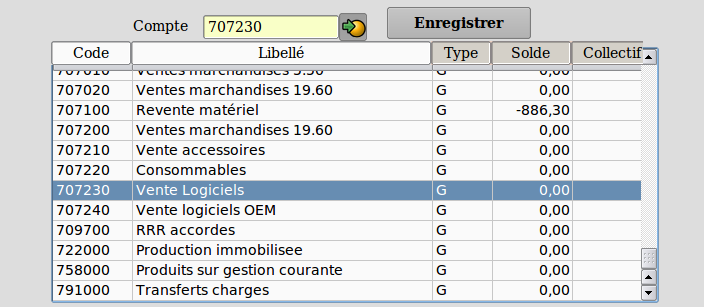
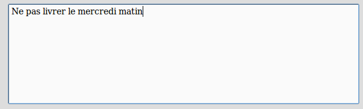
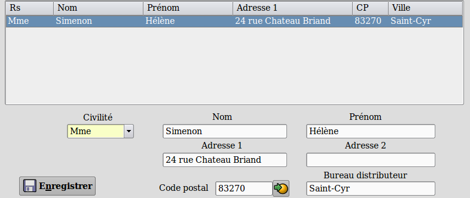

~ Comptabilité et Facturation Laurux ~

~ Comptabilité et Facturation Laurux ~ |
|
|
|

A partir de cet écran vous pouvez
créer, modifier et supprimer une fiche client.
Les zones obligatoires pour creer un compte sont le code, le libelle et le collectif. Un controle est fait lors de la validation pour s'assurer que ces zones sont correctement renseignees.
Enfin, d'autres boutons vont vous servir pour créer un nouveau compte, pour en supprimer un, ou bien pour envoyer un mail au client sélectionné.
Pour créer une fiche, cliquez sur le bouton " Créer ", un code sera automatiquement généré par le programme, ce code n'est pas modifiable et s'incrémente lors de chaque nouvelle création. Remplissez alors l'ensemble des zones que nous venons de détailler.
Pour supprimer une fiche, positionnez vous sur celle-ci, puis cliquez sur le bouton " Supprimer ". Après différents contrôles qui vous assureront que le compte n'est pas mouvementé, cliquez sur le bouton de confirmation. Si le compte a des écritures, la suppression sera impossible. Le code du compte supprimé n'est pas récuperé, ainsi, si vous avez des "trous" dans votre codification, cela est normal et s'explique par cette particularité.
Pour envoyer un mail, cliquez sur le bouton correspondant. Cette action va lancer le logiciel de messagerie " Kmail ", avec par défaut, l'adresse email du client.
On peut aussi imprimer des étiquettes clients en cliquant sur le bouton "Etiquette". Le programme demandera si on souhaite imprimer des étiquettes enveloppe ou colis.
Pour rechercher une fiche afin de la visualiser, de la modifier ou bien de la supprimer, vous pouvez cliquer sur chaque titre des différentes colonnes pour effectuer un tri , ainsi, si vous cliquez sur " Nom " les fiches seront triées par le nom des clients, si vous cliquez sur " Code " les fiches seront triées par le code comptable des fiches.
Nb : Les zones grisées ne sont pas accessibles.

vous pouvez affiner votre recherche en utilisant le curseur vertical droit ou bien en tapant directement dans la zone sélectionnée le début orthographique de votre recherche. Pour avoir le détail d'une fiche, il suffit de cliquer, dans la partie haute, sur la ligne choisie.
Vous disposez de quatre onglets pour renseigner convenablement votre fiche.
Le premier onglet " Identité "
vous permet de remplir les zones adresses, téléphones,
fax.
Pour saisir vos comptes collectifs cliquez sur
l'icône  à
droite du champ de saisie. Une fenêtre s'ouvre et il suffit alors
de cliquer sur le compte souhaité pour le
récupérer.
à
droite du champ de saisie. Une fenêtre s'ouvre et il suffit alors
de cliquer sur le compte souhaité pour le
récupérer.

Dans l'onglet " Divers " il y a trois panels . Un panel " RIB " pour les coordonnées bancaires, un panel " Divers " pour le plafond de l'encours et différents boutons à cocher, plafond de l'encours autorisé, relevé de factures et de compte, si le client est exonéré de TVA, le nombre d'exemplaires de facture souhaité ainsi que le mode de réglement et son échéance. Un panel " Remises " pour les remises MO et pièces qui seront par défaut lors de la facturation, et le type du client (sert pour le calcul des remises par type client).
NB: Le bouton "A livrer" servira lors de la saisie des documents clients. Voir la note sur ce sujet dans la documentation sur la facturation.

Dans l'onglet " Ventilations " vous pouvez, ici, saisir les comptes communément utilisé lors de la saisie des écritures comptables. Cela vous permettra, par la suite, d'automatiser la saisie de vos contreparties en évitant de faire une recherche dans l'ensemble du plan comptable, le programme ne vous proposant alors que les comptes saisis par ce menu.
Pour saisir vos contreparties cliquez sur l'icône à droite de la zone " Compte ". Apparaissent alors les comptes de gestion et de bilan.
Recherchez votre compte et cliquez sur celui-ci pour le sélectionner.
Il ne reste plus qu'à enregistrer votre saisie.
NB. Si l'option "Compta et facturation" est activée alors cette
possibilité de parametrer les contre-parties automatiques ne servira
que pour les comptes fournisseurs puisque, pour les clients les
écritures de ventes seront automatiquement générées par le parogramme
de facturation.

L'onglet " Observation "
est une zone de texte qui vous permet de saisir des commentaires. Cette
zone est purement indicative, elle n'est qu'un " pense
bête " et n'est pas utilisée ailleurs par le
programme.

On peut aussi renseigner des adresses de livraison ainsi des contacts. Ces données sont illimitées.
L' onglet, "Documents liés", va permettre de mémoriser des documents dans chaque fiches clients ou fournisseurs.
Enfin, le dernier onglet "Statistiques" offre, pour le client séléctionné, une vue du chiffre d'affaire mensuel sur 4 ans avec un total général en bas de page.
En faisant un clic droit sur une ou plusieurs lignes, on aura le détail des produits achetés pour la période séléctionnée.
Lorsque l'ensemble de vos données ont été correctement renseignées, il faut cliquer sur l'icône " Enregistrer ".
Le bouton "Mail" permet l'envoi de courriels si la zone est renseignée.
Le bouton "Sms" permet l'envoi de SMS si la zone portable est renseignée.
NB : Le bouton "Sms" apparaît seulement si la gestion des SMS est activée dans les préférences.
Voir la page dédiée à la Gestion des SMS ou Utilisation des SMS sous Laurux
N'oubliez pas d'enregistrer votre travail avant de quitter le programme.
----------------------------------------------------------------------------------------------------------------------
Les tables fournisseurs fonctionnant d'une manière sensiblement identique à celles des clients, merci de vous référer à ces dernières.